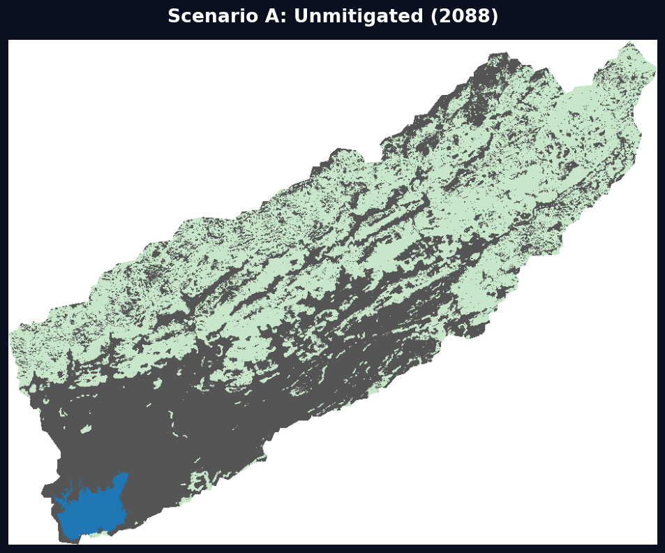
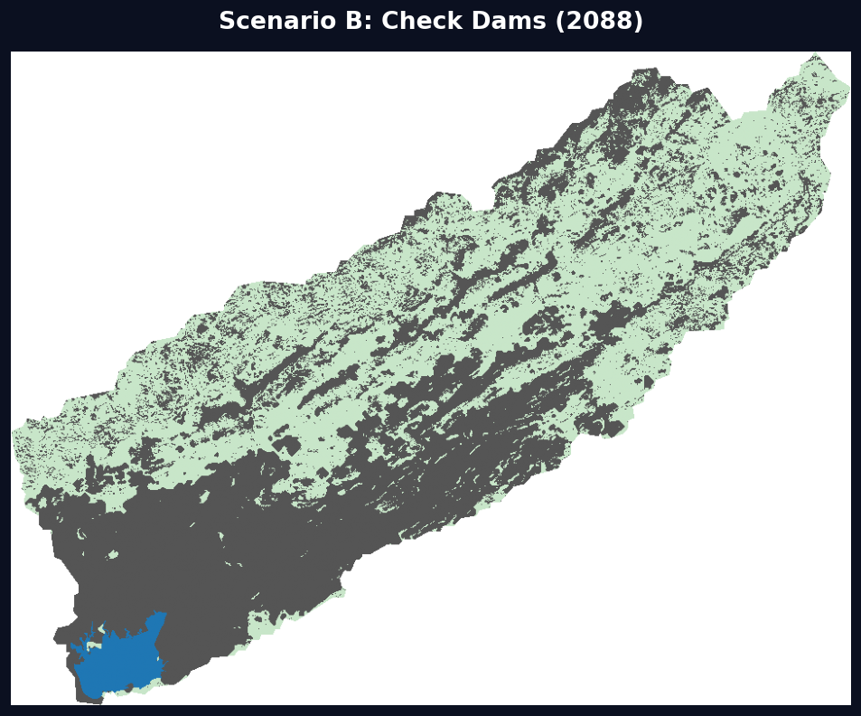
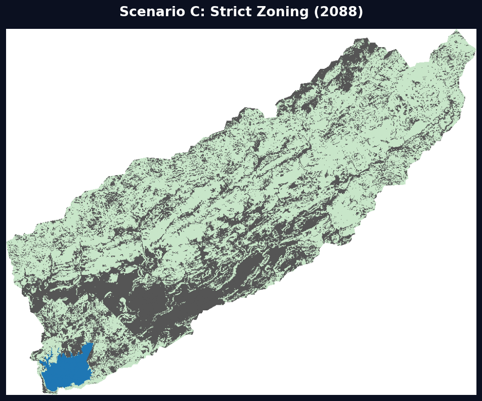
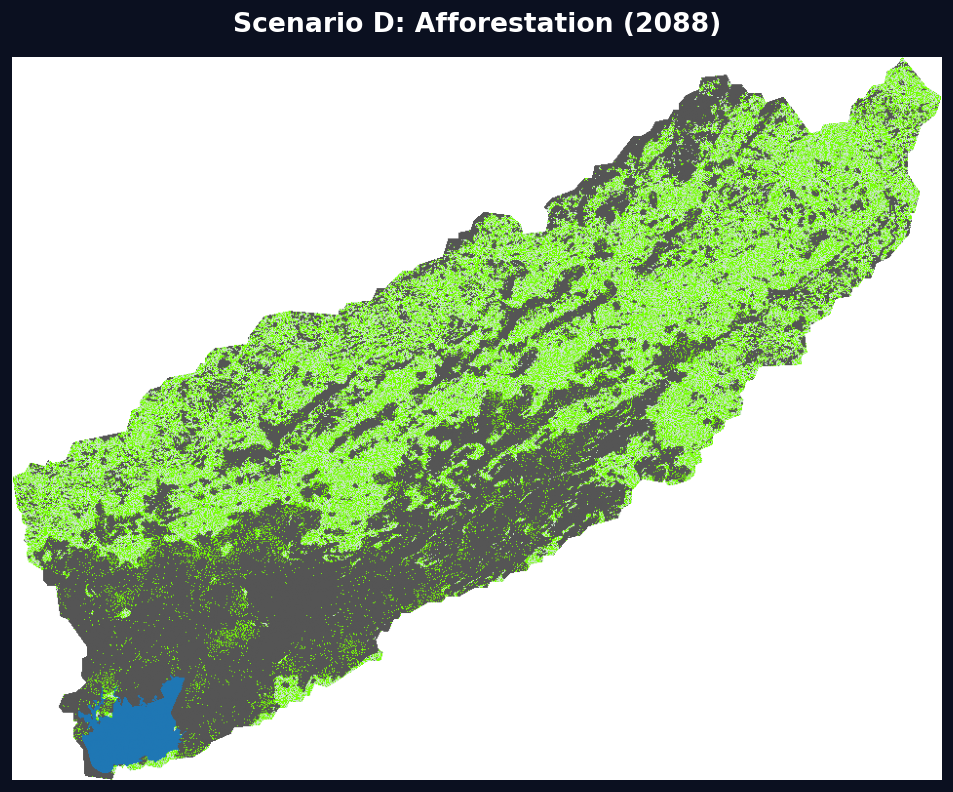
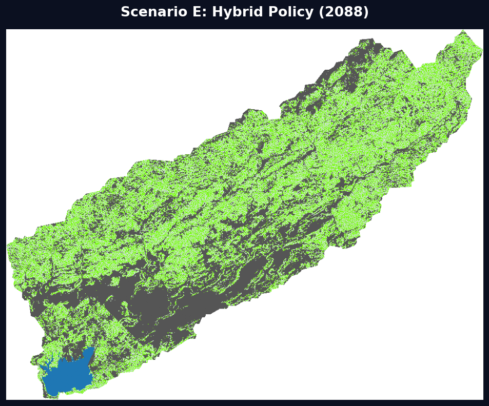

Reservoir Hydrology
Surface area and volumetric storage capacity, 2000-2024
Surface Area (Acres)
Storage Capacity (MCM)
Climate Forcing
Precipitation, temperature, and evaporation over the analysis period
Annual Precipitation
Mean Max Temperature
Annual Evaporation (MCM)
Urban Sprawl Tracker
Watershed urbanization detected via Landsat NDBI analysis
Absolute and Incremental Urban Footprint
End-of-Life Forecast
Unmitigated trajectory: storage decline from 2000 to dead storage threshold
Storage Capacity Projection (Scenario A: Business As Usual)
Spatial Overview
Static map snapshots from the pipeline. Full interactivity on the Map page.




